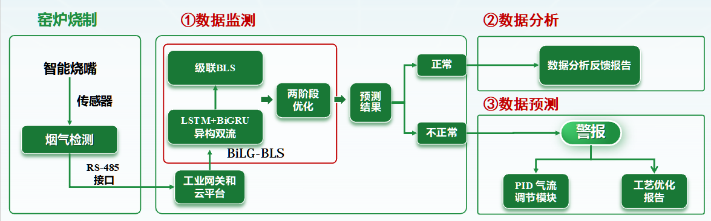
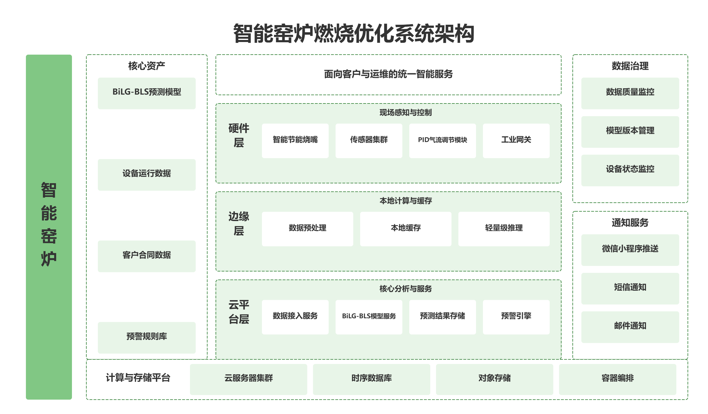

碳智优——数字化烧嘴管家
工业物联网 · AI预测优化 · 窑炉燃烧数字化解决方案
01 项目概览
🎯 一句话定位
为陶瓷行业打造的数字化烧嘴管家，通过"智能硬件+AI预测模型+云平台"三位一体，实现单窑炉天然气节约率≥10%，燃烧效率提升至80%以上。
💡 核心洞察
中国陶瓷行业年天然气消耗超200亿m³，窑炉能耗占生产成本30%-40%。传统燃烧控制依赖人工经验，调控粗放、响应滞后。本项目通过BiLG-BLS预测模型+自动PID调控+O2O运维，将"老师傅的经验"转化为"可复制的AI能力"，帮助陶瓷厂实现节能降耗与合规达标。

02 市场分析与竞品洞察
📈 市场背景
- 中国陶瓷行业年天然气消耗超200亿m³，窑炉能耗占生产成本30%-40%
- 国家"双碳"政策驱动，陶瓷行业面临碳排放配额收紧与环保达标双重压力
- 单条窑炉年运营成本400万-800万元，节能10%-15%即可带来显著经济效益
- 工业物联网（IIoT）与AI预测技术在窑炉节能领域应用尚处早期，垂直数字化解决方案市场空白
竞品分析
| 竞品 | 优势 | 劣势 | 我们的差异化 |
|---|---|---|---|
| 霍尼韦尔燃烧系统 | 国际品牌、技术成熟、品牌信任度高 | 价格昂贵（单套50万+）、本土化服务弱、无AI预测 | ✅ 国产化替代、AI智能预测、性价比优势 |
| 传统烧嘴制造商（国产） | 价格低、渠道覆盖广 | 无数字化能力、燃烧效率低（≈65%）、无远程监控 | ✅ 硬件+软件一体化、数字化运维、效率提升至80% |
| 通用工业物联网平台 | 平台能力强、接入设备多 | 缺乏窑炉燃烧专业知识、模型通用性不足 | ✅ 垂直深耕窑炉场景、BiLG-BLS专用模型、工艺闭环 |
| 陶瓷厂自建系统 | 定制化程度高 | 开发成本高、维护困难、技术迭代慢 | ✅ SaaS化部署、快速上线、持续迭代、专业算法支持 |
03 用户分析
👤 核心用户画像（50%）
陶瓷厂生产管理人员 | 35-50岁 | 窑炉车间主任/生产经理/能源管理专员
🔸 痛点：人工调控滞后、燃烧效率低（≈65%）、能耗成本高、环保压力大
🔸 消费行为：决策周期长（需层层审批）、注重ROI、依赖数据说服、关注同行案例
👤 次要用户画像（30%）
陶瓷厂高层决策者 | 45-60岁 | 厂长/总经理/能源总监
🔸 痛点：缺乏能耗透明度、节能改造成本高、效果难量化
🔸 消费行为：决策依赖ROI计算、同行案例、政府补贴政策
核心使用场景
场景一：生产管理人员日常监控（高频、核心场景）
- 打开微信小程序，查看今日能耗概览（天然气消耗、燃烧效率、温度曲线）
- 发现3号窑炉燃烧效率下降至75%，点击查看详情
- 查看BiLG-BLS模型预测：未来2小时效率将持续下降，建议调整空燃比
- 点击"一键优化"，系统自动下发PID调节指令
- 10分钟后查看优化效果，效率回升至80%
- 收到系统推送的日报：今日节约天然气1,200m³，节约成本¥4,800
场景二：高层决策者评估投资回报（月度、重决策场景）
- 登录PC端管理后台，查看"节能效益看板"
- 本月累计节约天然气36,000m³，节约成本¥144,000
- 查看ROI计算：系统投入¥150,000，预计10个月回本
- 导出月度节能报告，用于内部汇报和政府补贴申请
- 查看同行业对比：本厂燃烧效率排名区域前20%
04 产品设计
系统架构
碳智优——数字化烧嘴管家
├── 硬件层
│ ├── 智能节能烧嘴（分段式喷火铜管 + 风叶优化）
│ ├── 传感器集群（温度/流量/压力/烟气成分，RS-485接口）
│ ├── PID气流调节模块（燃气/空气比例自动调节）
│ └── 工业网关（数据采集、边缘计算、4G/WiFi上传）
│
├── 边缘计算层
│ ├── 数据预处理（滤波、归一化、特征提取）
│ ├── 本地缓存（断网时存储≥24小时数据）
│ └── 轻量级推理（异常初筛、紧急调控）
│
├── 云平台层
│ ├── 数据接入服务（MQTT/HTTP协议）
│ ├── BiLG-BLS模型服务（VMD分解+LSTM+BiGRU异构双流+级联BLS）
│ ├── 预测结果存储（时序数据库）
│ ├── 预警引擎（规则引擎 + 模型预测双驱动）
│ ├── 报告生成服务（日报/周报/月报）
│ └── 设备管理服务（OTA升级、状态监控）
│
├── 应用层
│ ├── 微信小程序（远程监测、预警接收、报告查看）
│ ├── PC端客户后台（多窑炉管理、数据导出、合同管理）
│ └── 管理后台（客户管理、设备管理、订单管理、模型管理）
│
└── 通知服务
├── 微信小程序推送（异常预警、报告推送）
├── 短信通知（紧急故障）
└── 邮件通知（月度报告、合同文件）
核心功能设计亮点
亮点一：BiLG-BLS预测模型——从"经验驱动"到"AI驱动"
- VMD变分模态分解：分离高频火焰脉动与低频热演变趋势
- LSTM流：捕捉窑炉长周期热平衡惯性
- BiGRU流：实时锁定风媒配比的瞬时物理耦合
- DCA自适应级联BLS：自动匹配最优映射层深度，计算资源消耗低
- 预测准确率目标R² ≥ 0.919（92%），推理时间≤5秒/次
亮点二：三级预警+自动调控闭环
| 预警级别 | 触发条件 | 通知方式 | 响应要求 |
|---|---|---|---|
| 🔴 紧急 | 温度超限±50℃ / 燃气泄漏 / 设备离线 | 小程序推送+短信+电话 | 15分钟内响应，自动触发PID调控 |
| 🟡 重要 | 效率下降>5% / 排放超标 / 传感器故障 | 小程序推送+短信 | 1小时内响应，提供调控建议 |
| 🟢 提示 | 效率轻微波动 / 维护提醒 / 报告生成 | 小程序推送 | 24小时内查看 |
亮点三：硬件+软件+服务一体化（O2O闭环）
- 硬件销售（智能节能烧嘴¥1,400/支）：建立客户信任与数据触点
- 数字化服务（订阅制/按效果收费）：客户生命周期价值（LTV）大
- 线下运维（技术团队）：安装调试、定期巡检、故障处理
- 协同效应：安装烧嘴 → 接入平台 → 持续数据服务 → 工艺优化 → 复购/升级
亮点四：合作生态与多方角色设计
| 合作方 | 角色 | 责任 |
|---|---|---|
| 平台（我方） | 系统开发、算法研发、品牌推广、售后技术支持 | BiLG-BLS模型训练与迭代、小程序/云平台开发、客户培训、故障远程诊断 |
| 陶瓷厂客户 | 烧嘴使用方、数据提供方、效果验证方 | 提供窑炉运行数据、配合安装调试、按约定支付费用、反馈使用体验 |
| 烧嘴制造商合作伙伴 | 硬件代工/联合生产、渠道分销 | 按标准生产智能烧嘴、质量把控、区域销售推广 |
| 传感器/工业网关供应商 | 数据采集设备供应 | 提供RS-485接口传感器、工业网关、技术支持 |
05 核心流程设计
数据采集与预测流程
异常预警处理流程
客户签约与部署流程
节能效益核算流程
06 原型设计
微信小程序原型
PC端客户后台原型
管理后台原型（平台运营端）
07 数据指标体系
🌟 北极星指标：单窑炉天然气节约率 ≥ 10%
（改造前日均消耗 - 改造后日均消耗）/ 改造前日均消耗 —— 衡量产品核心价值和客户ROI
核心指标看板
关键埋点事件
| 事件名 | 触发时机 | 用途 |
|---|---|---|
dashboard_view | 进入小程序首页 | 用户活跃度分析 |
realtime_monitor_view | 进入实时监测页 | 核心功能使用频率 |
alert_click | 点击预警通知 | 预警触达效果 |
alert_handle | 确认处理预警 | 预警处理效率 |
optimize_click | 点击一键优化 | 自动调控使用率 |
report_view | 查看报告 | 报告功能使用频率 |
report_export | 导出报告 | 报告价值评估 |
device_status_view | 查看设备状态 | 设备管理关注度 |
model_accuracy_check | 查看模型效果 | 技术可信度 |
08 版本规划与里程碑
P0 硬件定型：智能节能烧嘴定型、传感器集成、工业网关部署
P0 平台基础：数据监测、实时看板、基础预警
里程碑：完成单窑炉Demo部署，燃烧效率提升至78%
P0 BiLG-BLS模型上线、预测准确率≥92%
P1 微信小程序、异常预警、自动调控
里程碑：完成2家客户试点部署，验证节能效果
P1 工艺优化报告、预防性维护
P0 管理后台：客户管理、设备管理、订单管理
里程碑：签约5家客户，实现SaaS化运营
P2 多窑炉管理、历史数据查询、数据导出
P1 模型自动迭代、A/B测试
里程碑：签约10家客户，客户续约率≥80%
P1 硬件优化：分段式喷火铜管、风叶结构优化
P2 专项报告、政府补贴申请材料生成
里程碑：签约15家客户，单客户ARPU≥¥50,000
P2 智能推荐（工艺优化建议）、行业对标、API开放
P2 生态建设：合作伙伴接入、渠道分销
里程碑：签约20家客户，启动区域代理合作
09 项目成果与反思
🏆 核心成果
- 输出完整PRD文档 v1.0（10大模块，覆盖背景/需求/用户/功能/流程/原型/数据/异常/版本/附录）
- 设计BiLG-BLS预测模型架构：VMD+LSTM+BiGRU异构双流+级联BLS，预测准确率目标≥92%
- 构建五层系统架构：硬件层→边缘计算层→云平台层→应用层→通知服务
- 设计三级预警+自动调控闭环：紧急/重要/提示分级，PID自动+手动双模式
- 建立8大核心指标的数据监控体系，含北极星指标与埋点事件
💡 关键收获
- B端产品思维：工业产品决策链长、信任门槛高，需通过ROI计算、同行案例、政府补贴等多维度推动决策
- 硬件+软件协同设计：智能烧嘴是数据入口，AI模型是价值核心，二者缺一不可
- 边缘计算的重要性：工业场景网络不稳定，边缘端需保留轻量级推理能力和≥24小时本地缓存
- 异常处理的前瞻性：窑炉大修停产、燃料类型变更、传感器漂移等边界情况需提前设计应对策略
🔧 技术亮点
- BiLG-BLS模型：相比传统LSTM（71%）和Transformer（85%），预测准确率提升至92%，计算资源消耗低
- PID闭环调控：单次调节幅度限制（燃气±3%、空气±5%），防止剧烈波动，调控周期≤10秒
- OTA固件升级：签名验证防恶意刷机，升级失败自动回滚至上一版本
- RBAC权限控制：超级管理员/运营管理员/技术工程师/客服专员/财务专员五角色权限体系
🎯 如果重新做，我会优化
- 补充一手用户调研：当前用户画像基于行业经验推断，需深入陶瓷厂进行实地访谈和观察
- 增加技术可行性验证：BiLG-BLS模型在真实窑炉数据上的表现需通过POC验证
- 细化成本估算：硬件BOM成本、云服务器费用、技术团队人力成本需更精确测算
- 补充合规审查：工业燃烧设备需符合GB/T标准，数据采集需考虑安全生产规范
- 增强竞品实地测试：对霍尼韦尔等竞品进行实际使用体验，获取更真实的一手对比数据
10 相关链接
📄 完整PRD文档：碳智优——数字化烧嘴管家 PRD v1.0（Word文档）
🎨 原型设计：微信小程序 + PC端客户后台 + 管理后台（原型见上文截图占位区）